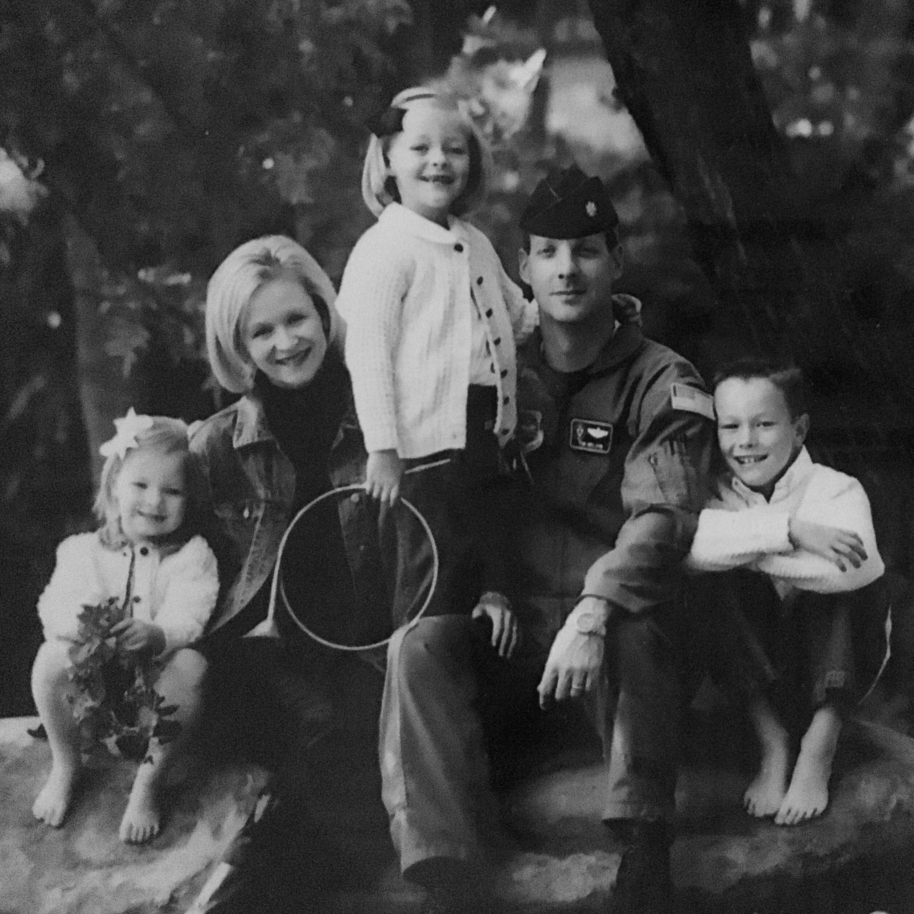

I've lived in numerous states and many enviorments throughout my life. Ranging from the hot heat in Florida to the bitter cold winters of Colorado. In memory of all the states I have lived, I wanted to create a bakery. Each cupcake on the menu represents a place I once called home.